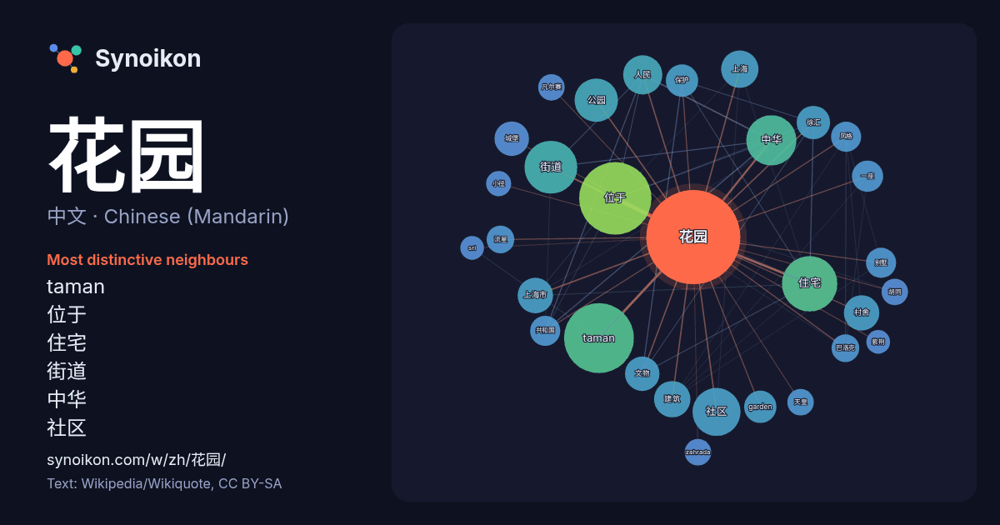

中文 · Chinese (Mandarin) · word of the day list
花园
“garden” · The words found around it in 958 instances from Chinese (Mandarin) Wikipedia, Wikiquote.

Most distinctive neighbours
- taman 68×
- 位于 41×
- 住宅 35×
- 街道 32×
- 中华 27×
- 社区 24×
- 公园 22×
- 村舍 19×
- 上海市 17×
- 徐汇 17×
- garden 16×
- 城堡 15×
- 别墅 14×
- 文物 13×
- 上海 12×
- 巴洛克 12×
- 流星 12×
- 风格 11×
- zahrada 11×
- 凡尔赛 11×
× = how many times more often than in general Chinese (Mandarin) Wikipedia text.
Most frequent neighbours
- 位于 75
- taman 70
- 住宅 44
- 街道 40
- 中华 36
- 社区 33
- 公园 27
- 人民 22
- 上海 20
- 建筑 19
- 上海市 18
- 村舍 18
- 城堡 17
- 文物 17
- 徐汇 16
- garden 15
- 保护 15
- 城市 15
- 一座 14
- 中国 14
In context
- 《真境花园》（波斯語：گلستان گلستان，Golestȃn，亦譯《薔薇园》）是一部波斯文学作品，有说法称其为最有影响力的波斯语散文。真境花园是中世纪最伟大的波斯诗人萨迪两个主要作品中的一项，成书于公元1258年，為作者最受欢迎的书籍，在东西方影響深遠。其中很多語句仍於西方世界被引用。 Wikipedia snippets · 真境花园
- 恭王府位於中國北京市西城区什刹海街道前海西街17号，是清朝后期恭亲王奕訢的府邸及花园，现在是全国重点文物保护单位。恭王府花园在20世纪90年代作为旅游景点对外开放，而恭王府主体建筑也在2008年北京奥运会举办时修缮完毕，并向公众开放。 恭王府及花园原是固倫和孝公主在和珅作為二品户部侍郎邸的規制基礎上，花六年增建的 Wikipedia snippets · 恭王府
- 肯辛顿花园（英語：Kensington Gardens）曾经是肯辛顿宫的私人花园，现在是伦敦的皇家公园之一。花园由威斯敏斯特市和肯辛頓-切爾西皇家自治市共同拥有，西临位于伦敦中西部的海德公园。花园占地107公顷（265英亩）。肯辛顿花园、海德公园、格林公园和圣詹姆斯公园的开放空间共同构成了伦敦市中 Wikipedia snippets · 肯辛顿花园
- 花园的扩建，他们将花园的林荫路设计成星状，各条林荫路在美泉宫中心的中轴交汇，巴洛克艺术的花园代表了皇家由内向外的统治。花园正面是一座硕大的花坛，植物严格对称地种植在彩色的石头上，花坛两侧则是经过严格修剪的树篱。1752年爱好自然科学的弗朗茨一世在皇宫旁建造了美泉动物园，第二年又在花园 Wikipedia snippets · 美泉宫
- 在中年结婚，生有两个孩子，但都很早失去。他的妻子也先于他逝世。1387年帖木儿攻陷设拉子，之后两年，哈菲兹因贫困和愤懑逝世，被葬于设拉子郊外的莫萨拉花园。 他一生诗作共有500～900多首，主要以“加扎勒”（波斯古典诗歌中的一种抒情诗体）为主，其诗集为《诗颂集（英语：The Divān of Wikipedia snippets · 哈菲兹
- 野人花园（英語：Savage Garden）是一組已经解散的澳大利亚雙人音乐團體，由主唱戴伦·海斯（Darren Hayes）和吉他手兼键盘手丹尼尔·琼斯（Daniel Jones）组成。野人花园于1993年成立，2001年巅峰之际宣布解散，是澳洲历年来最成功的音乐团体之一。其中著名的歌曲包括：“Truly Wikipedia snippets · 野人花园
- 《小径分岔的花园》（西班牙語："El jardín de senderos que se bifurcan"，又名《交叉小径的花园》）是阿根廷作家和诗人豪尔赫·路易斯·博尔赫斯在1941年创作的短篇故事。该短篇被收录在1994年全文发表于《虚构集》上的同名文集《小径分岔的花园 Wikipedia snippets · 小径分岔的花园
- 速度，但現時電影都多以每秒二十四格圖像作放映標準。 路易斯·普林斯于1888年10月14日，使用改进版的单镜头摄影机（即MkII）拍摄了电影《朗德海花园场景》。他在利兹的汉斯莱特区的惠特利工厂以及惠特利位于朗德海的家—奥克伍德农庄展出了他这第一部电影。 本身为第七艺术，而电影本身成为第七艺术的来由是 Wikipedia snippets · 电影
More Chinese (Mandarin) words
Precomputed on 2026-10-09 with default settings (±5 words, medium corpus). The interactive map can refresh it with live data.